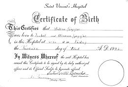
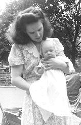
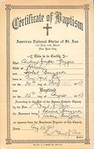
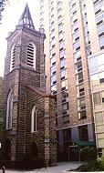

Click on pictures for larger view

Here is the hospital birth certificate testifying that I was actually
born rather than hatched. The legal State of New York Birth Certificate
has PM instead of AM on the time.

This photo, taken July 4th in Washington Park, New York City, is one
I heard about a number of times during my childhood and later. My
parents wanted to take the picture with a nice background, and my
mother stepped back onto the grass. She was immediately chased off
the grass by a policeman. This is a cropped version, click on it to
see the whole photo. You can see in the full one how harsh my life
was from the first - my baby carriage has bare iron wheels, not
plump soft rubber tires like they all do today!


I was baptized in the National Shrine of Saint Ann in New York City.
Unfortunately, all that remains is this historic church is the
bell tower and some of the facade, as it was sold by the Archdiocese
of New York and demolished to build a college dormatory.